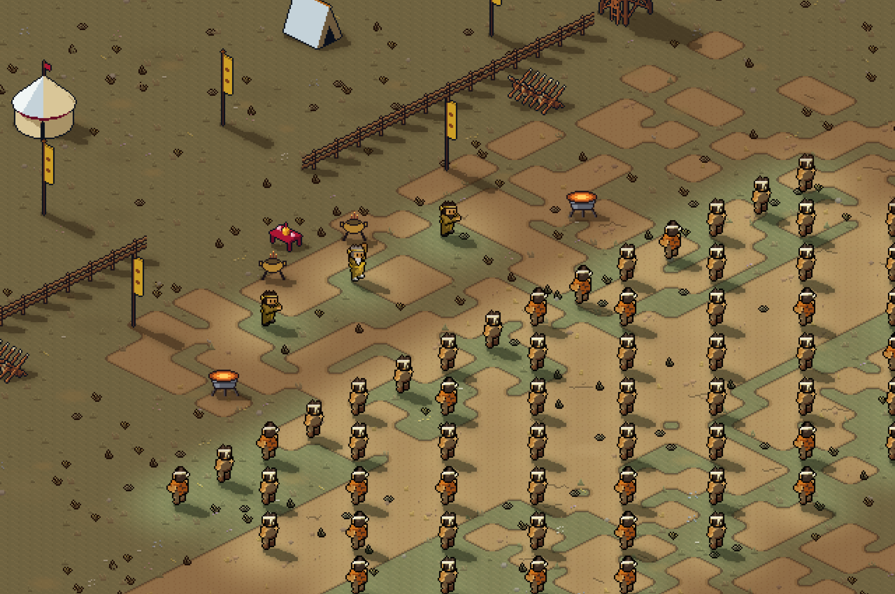
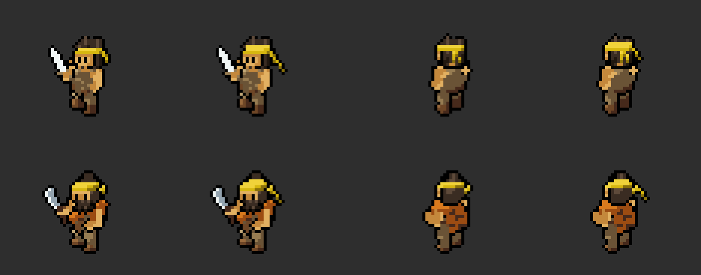

타이틀 영상 2번 컷 시안입니다. 진채를 세운 실제 게임 화면 위에 외침 글자만 웹으로 얹었습니다. 글자 타이밍과 크기는 게임에 넣을 때의 계획대로입니다.

장각 뒤에 제단과 향로 둘, 양옆에 노란 깃발과 화로를 둡니다. 그 뒤로 목책과 문(녹각), 모서리 망루, 군막 셋을 맵 오브젝트로 세워 해질녘 어둠도 같이 받습니다.
말풍선 대신 머리 위에 붓글씨를 크게 찍습니다. 툭 커졌다가 줄며 떠오르고 사라집니다. 병사는 몇 명만 작은 글씨로 띄우고 나머지는 뛰기만 합니다. 필름 색을 입히기 전에 그려서 글자도 같이 바랩니다.
노란 옷의 경보병은 투구라 머리띠가 없어서, 황건 군중은 머리띠를 맨 산적·무뢰배 차림으로 맞춥니다. 화면 속 병사들이 이미 그렇게 바뀐 모습입니다.
위 줄은 산적, 아래 줄은 무뢰배입니다. 띠를 한 줄 굵게 하고, 뒤로 날리는 띠 자락을 붙였습니다. 도트를 고치면 곡식 나눔·외침·약탈 세 컷과 스토리·전투의 황건병에 함께 적용됩니다. 이 그림은 시안이라 띠 자락은 정식 작업 때 다듬습니다.
